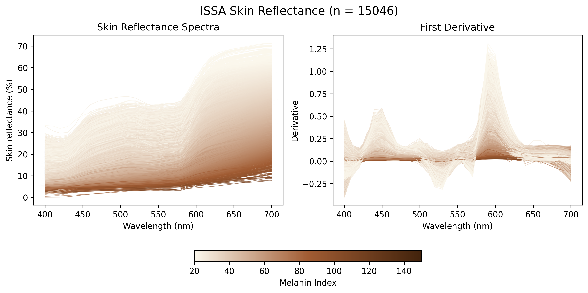
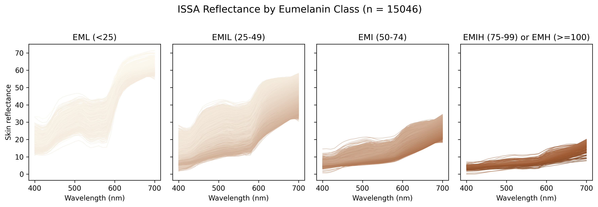
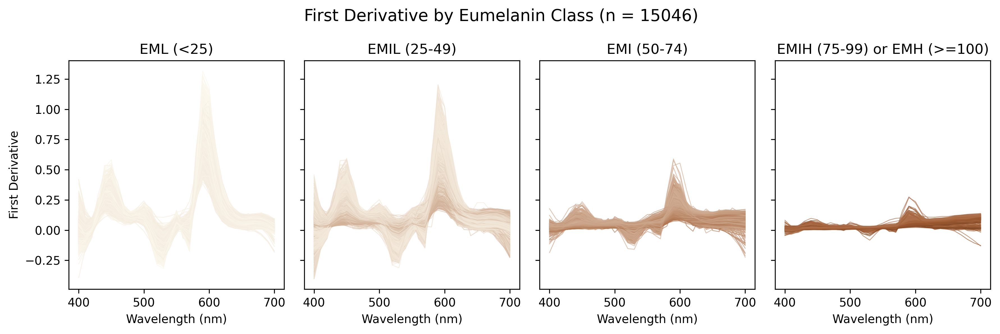

ISSA Skin Reflectance
1 Introduction to the ISSA Dataset
The International Skin Spectra Archive (ISSA) offers a detailed collection of spectral and colorimetric data for human skin, encompassing 15,256 records from 2,113 subjects. This data spans from 2012 to 2024 and originates from eleven datasets curated by international laboratories across eight countries: the UK, Spain, China, Japan, Pakistan, Thailand, Iraq, and Saudi Arabia. Each dataset follows a standardised measurement protocol to maintain data consistency.
In the ISSA dataset, individual records provide extensive details including record number, data origin, subject identification, and skin type—categorised by ethnicity, gender, age, and body location. The dataset also includes detailed information on the measurement instruments used, such as type, specular component inclusion, wavelength range and interval.
Alongside spectral data, each sample also contains CIE colorimetric data, including tristimulus values, xy chromaticity coordinates, CIELAB parameters, etc., based on the CIE 1931 standard colorimetric observer and the CIE standard illuminant D65.
1.1 Data Records
The datasheet arranges data across columns labelled A to BQ:
- A: Unique record identifier
- B: Data origin
- C: Subject number
- D to G: Ethnicity, gender, age group, and body location
- H to L: Instrument details including type and spectral measurement specifics
- N to BD: Spectral data from 360 nm to 780 nm
- BF to BQ: CIE colorimetric data
1.2 Skin Type
- Ethnicity: CA (Caucasian), CN (Chinese), SA (South Asian), AF (African), IQ (Iraqi), TH (Thai), JP (Japanese), AB (Arabian)
- Gender: F (Female), M (Male)
- Body Location: 1 (Back of Hand), 2 (Cheek), 3 (Cheek bone), 4 (Chin), 5 (Ear Lobe), 6 (Forehead), 7 (Inner arm), 8 (Neck), 9 (Nose tip), 10 (Outer arm), 11 (Palm), 12 (Ring finger)
2 Visualization of ISSA Reflectance and Its First Derivative
2.1 ISSA Overview
Melanin index is a quantity that measures the amount of melanin present in the epidermis, calculated as \[\mathrm{MI} = 100 \log_{10}\!\left(\frac{100}{R_{680}}\right),\] where \(R_{680}\) is reflectance at 680 nm, expressed in percent.
2.2 Eumelanin Human Skin Colour Scale
The Eumelanin Human Skin Colour Scale uses the following 5-point melanin index classes:
- Eumelanin Low (EML): MI < 25
- Eumelanin Intermediate Low (EMIL): 25 \(\leq\) MI < 50
- Eumelanin Intermediate (EMI): 50 \(\leq\) MI < 75
- Eumelanin Intermediate High (EMIH): 75 \(\leq\) MI < 100
- Eumelanin High (EH): 100 \(\leq\) MI
The ISSA eumelanin class information is summarized as:
| Eumelanin Class | EML (<25) | EMIL (25-49) | EMI (50-74) | EMIH (75-99) | EMH (>=100) |
|---|---|---|---|---|---|
| Site | |||||
| Back of Hand | 43 | 1470 | 160 | 32 | 1 |
| Cheek | 216 | 1974 | 227 | 50 | 4 |
| Cheek Bone | 24 | 186 | 18 | 0 | 0 |
| Chin | 271 | 1499 | 211 | 36 | 5 |
| Ear lobe | 9 | 395 | 57 | 12 | 3 |
| Forehead | 77 | 1756 | 190 | 30 | 3 |
| Inner arm | 44 | 1584 | 50 | 0 | 0 |
| Neck | 51 | 888 | 167 | 53 | 0 |
| Nose tip | 29 | 582 | 31 | 1 | 0 |
| Outer arm | 24 | 1431 | 166 | 6 | 0 |
| Palm | 123 | 617 | 27 | 1 | 0 |
| Ring finger | 100 | 104 | 4 | 3 | 1 |
| Total | 1011 | 12486 | 1308 | 224 | 17 |
2.3 Visualization by Eumelanin Classes


2.3.1 Key Observations
- With increasing melanin index, the magnitude of first derivatives decreases gradually. This indicates that the reflectance spectrum of darker skins is flatter than that of lighter skins.